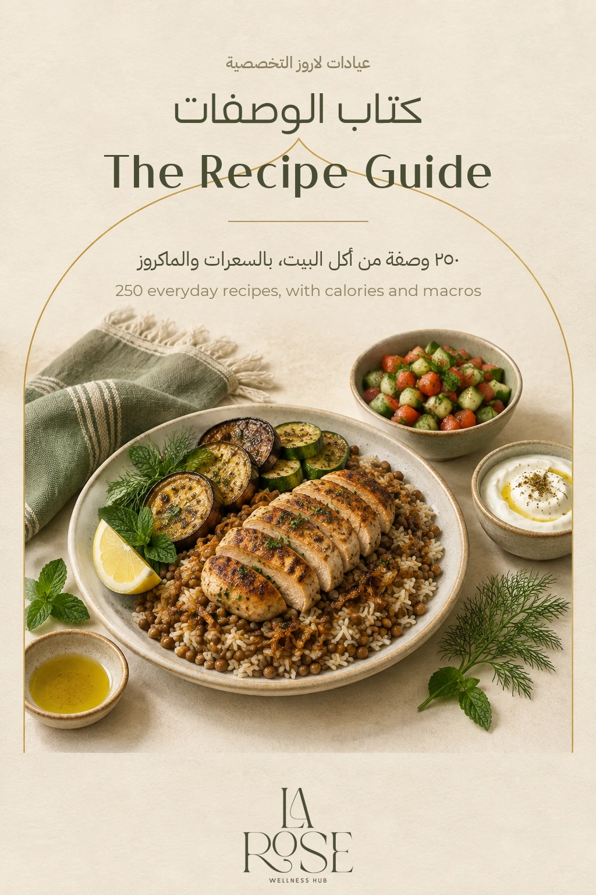
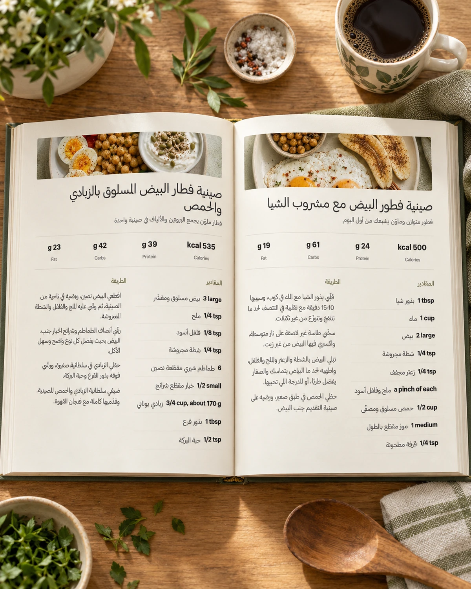

La Rose digital recipe bookكتاب لاروز الرقمي
The La Rose Recipe Bookكتاب وصفات لاروز
250 Egyptian recipes with calories and macrosوصفة مصرية بالسعرات والماكروز
One question comes up again and again with any nutrition plan: what do I eat today? This book answers it with real Egyptian food, ingredients found in any kitchen, and calculated calories.السؤال اللي بيتكرر مع أي خطة غذائية هو: آكل إيه النهاردة؟ الكتاب بيجاوب عليه بأكل مصري حقيقي، بمكونات موجودة في أي بيت، وسعرات محسوبة.
Order the book on WhatsAppاطلب الكتاب على واتسابTry 60 recipes freeجرّب ٦٠ وصفة مجاناً

What is inside?إيه اللي جوه الكتاب؟
- 250 Egyptian recipes across breakfast, lunch, dinner and snacks٢٥٠ وصفة مصرية مقسّمة على الفطار والغدا والعشا والسناكس
- Calories and macros worked out for every recipeالسعرات والماكروز محسوبة لكل وصفة
- Every recipe has its own video showing you how to make itكل وصفة ليها فيديو مخصوص يورّيك بتتعمل إزاي
- Ingredients from any supermarket, nothing importedمكونات موجودة في أي سوبر ماركت، مش مكونات مستوردة
- A substitution for each recipe when an ingredient is unavailableبدائل لكل وصفة لو مكوّن مش متوفر
- Batch-preparation ideas for the weekأفكار تحضير مسبق للأسبوع
- A PDF that works on both phone and laptopنسخة PDF تشتغل على الموبايل واللاب

Who is it for?الكتاب مناسب لمين؟
- Anyone following a clinic plan who wants ready ideas instead of wondering what to eat todayاللي ماشي على خطة من العيادة وعايز أفكار جاهزة بدل حيرة «آكل إيه النهاردة؟»
- Anyone cooking for the whole household who wants one dish for the table instead of making two mealsاللي بيطبخ للبيت كله وعايز أكلة واحدة تنفع على السفرة بدل ما يعمل وجبتين
- Anyone counting calories who wants the numbers in front of them instead of estimating every plate by eyeاللي بيحسب سعراته وعايز الأرقام قدامه بدل ما يقدّر كل طبق بالنظر
- Anyone tired of repeating the same meals who wants choices for breakfast, lunch, dinner and snacksاللي زهق من تكرار نفس الوجبات وعايز اختيارات للفطار والغدا والعشا والسناكس
- Anyone who trains or goes to the gym and wants varied protein options with the protein in each recipe already shownاللي بيتمرّن أو بيروح الجيم وعايز ينوّع مصادر البروتين ويعرف بروتين كل وصفة من غير تخمين
- Anyone building a healthier daily routine, even without following a clinic planاللي عايز يدخل اختيارات صحية أكتر في يومه، حتى لو مش ماشي على خطة من العيادة
How to orderإزاي تطلبه؟
- Message us on WhatsAppابعت لنا على واتساب
- The team confirms your orderالفريق هيأكد معاك الطلب
- We send the book as a PDF and a quick link for easy access on your phoneبنبعت لك الكتاب PDF ومعاه لينك سريع تفتحه بسهولة من الموبايل
Frequently asked questionsأسئلة متكررة
Is the book a substitute for a consultation?الكتاب ده بديل عن الكشف؟
No. The book contains home-cooking recipes; it is not a treatment plan or a substitute for a consultation or a plan made for your needs.لأ. الكتاب وصفات لأكل البيت، مش خطة علاج ولا بديل عن كشف أو خطة معمولة لحالتك.
How do I receive the book?أستلم الكتاب إزاي؟
Message us on WhatsApp. Once the order is confirmed, we will send the book as a PDF and a quick link for easy access on your phone.كلّمنا على واتساب، وبعد تأكيد الطلب هنبعت لك الكتاب كملف PDF ومعاه لينك سريع تفتحه بسهولة من الموبايل.
Can I use it if I have a medical condition?ينفع أستخدمه لو عندي حالة صحية؟
The book is a collection of home-cooking recipes, not a treatment plan. If you are under a doctor or dietitian's care, follow their guidance and choose recipes that fit your own plan.الكتاب وصفات أكل بيت، مش خطة علاج. لو بتتابع مع دكتور أو أخصائي، التزم بتعليماته واختار من الكتاب اللي يناسب خطتك.
Are the calories and macros accurate, and how were they calculated?السعرات والماكروز دقيقة؟ اتحسبت إزاي؟
The calories and macros are calculated from the quantities written for each recipe. Changing a quantity or product can change the numbers, so use them as a reference for the recipe as written.السعرات والماكروز محسوبة على المقادير المكتوبة لكل وصفة. لو غيّرت الكمية أو نوع منتج، الأرقام ممكن تختلف، فاعتبرها مرجع للوصفة زي ما هي مكتوبة.
Will I need special ingredients or equipment?هحتاج مكونات أو أدوات خاصة؟
The ingredients are available from ordinary supermarkets, without relying on imported items. Check the method before you start so you can prepare the equipment used in that recipe.المكونات من حاجات موجودة في السوبر ماركت، ومفيش اعتماد على مكونات مستوردة. بص على طريقة الوصفة قبل ما تبدأ عشان تجهّز الأدوات اللي هتستخدمها.
Can I use it if I am vegetarian or avoid certain foods?ينفع لو أنا نباتي أو مش باكل أكلات معينة؟
There is a variety of recipes and substitutions, but not every recipe will suit every dietary choice. Check the ingredients and choose what works for you; if you avoid foods on medical advice, follow your doctor's guidance.فيه وصفات وبدائل متنوعة، لكن مش كل وصفة هتناسب كل اختيار غذائي. راجع المكونات واختار اللي يناسبك، ولو بتستبعد أكل بتعليمات طبية امشِ على كلام دكتورك.
Is this a one-time purchase or a subscription?الكتاب طلب مرة واحدة ولا اشتراك؟
The book is a one-time purchase, not a monthly subscription. The team will confirm the ordering and payment details on WhatsApp.الكتاب طلب مرة واحدة، مش اشتراك شهري. تفاصيل الطلب والدفع بيأكدها لك الفريق على واتساب.
Can I use it to cook for the whole family?ينفع أطبخ منه للبيت كله؟
Yes. The recipes are based on home cooking and can be prepared for the family. Choose a quantity that suits your household, while each person follows any guidance specific to them.آه، الوصفات معمولة من أكل البيت وتقدر تحضّرها للأسرة. اختار الكمية المناسبة لعددكم، وكل شخص يمشي على أي تعليمات خاصة بيه.
Is there really a video for every recipe?فعلاً فيه فيديو لكل وصفة؟
Yes. Every recipe has its own video showing each step as it is made.آه. كل وصفة ليها فيديو مخصوص يورّيك خطواتها وهي بتتعمل.
Try 60 recipes freeجرّب ٦٠ وصفة مجاناً
60 recipes from the full book, free and with no sign-upوصفة من الكتاب الكامل، مجاناً وبدون تسجيل · A free edition with 60 recipes from the full book is available, so you can try it before you order.فيه نسخة مجانية فيها ٦٠ وصفة من الكتاب الكامل، تقدر تجربها قبل ما تطلبه.